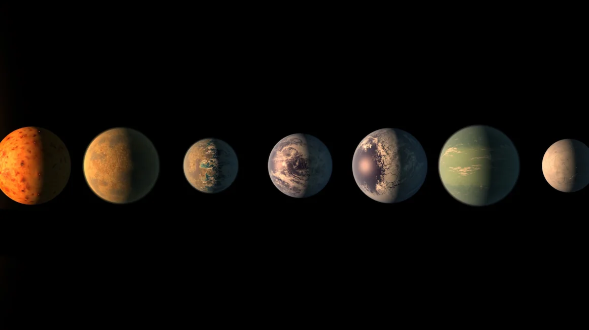

One of the most captivating questions, in my view, is: are we alone? As an astronomer, I contribute to answering this question by helping to identify the most promising observational targets in the search for life beyond Earth. This work relies largely on extrapolating what we know about life on our own planet to distant exoplanets. While life elsewhere is likely to differ greatly from life on Earth, our search must begin with the knowledge we have.
When we think of asteroid impacts, we don’t typically associate them with promoting life—after all, this is what led to the extinction of the dinosaurs. Yet without asteroid impacts, Earth may never have become habitable in the first place. During the late heavy bombardment, an intense period of asteroid impacts, Earth likely received most, if not all, of its water and experienced key atmospheric changes that made the emergence of life possible. For this reason, we argue that if asteroid impacts are essential for life, we can narrow our search for habitable worlds by focusing on planetary systems with distant giant planets like Jupiter and Saturn, which help direct asteroids toward inner rocky planets. I spoke about our research on SETI live and you can read more about it here.Terrestrial planet formation in the Solar System was greatly influenced by the giant planets, Jupiter and Saturn. By changing the masses of these planets and modeling core accretion in N-body simulations, we can better understand the role that the giant planets had in shaping the final properties of Mercury, Venus, Earth, and Mars. Read more about it here.

Pebble accretion is the process by which terrestrial planets grow within a gas and dust disk. As a protoplanet migrates through the disk, it efficiently captures small pebbles, rapidly increasing its mass in a manner similar to a snowball accumulating material. By building new numerical tools to model the underlying physics of this process, we have simulated the formation of the TRAPPIST-1 planets and placed constraints on their bulk compositions and atmospheres. Our predictions for the two innermost planets have been confirmed by JWST, and ongoing observations are on track to validate our predictions for the outer planets as well. Read more about it here.